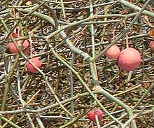

SAFARI
Users
- Cabbages, Mustards, Radishes, Turnips - Brassicaceae.
- Papayas - Caricaceae.
- Moringa - Drumstick Tree, Horseradish Tree, Moringaceae.
- Nasturtiums - Tropaeolum.
- Capers - Capparaceae.
- Spiderflowers - Cleomaceae.
- Oubli - Pentadiplandra brazzeana.
- Caylusea - family Resedaceae.
- Saltwort - Pickleweed, Batis.
Brassicaceae
Cabbages, Mustards, Turnips & Radishes
This huge family (Botanists call them all Mustards) accounts for most
of the winter greens and root vegetables humanity has depended on to make
it through 'till spring. Americans, with a seemingly limitless supply of
cheap meat and potatoes, have held cabbages in disregard, but would do
well to become more familiar with them for reasons of health, economy and
because, properly prepared, they taste good.
Cabbage Page.
Moringa Family
[Moringaceae]
This is a family containing a single genus, Moringa, with about 13 species. These trees are native to northern Africa and South Asia, particularly the Himalayan foothills. Nearly all are important medicinal plants and some are important for both human and livestock nutrition. Species with swollen water storage trunks are planted as exotic decoratives. Seeds are of interest for unusually stable biodiesel fuel.
Drumstick Tree [Horseradish Tree, Malunggay (Philippines), Sajina (India);
Moringa oleifera]
[Horseradish Tree, Malunggay (Philippines), Sajina (India);
Moringa oleifera]
This fast growing tree from northern India has been planted worldwide because of it's many uses, only a few of which are as food. The name "Horseradish Tree" comes from the taste of the roots when ground, but they should not be used as a condiment because they contain serious toxins. The main food parts are the pods (particularly in India) which
may be over 18 inches long, and young leaf shoots (particularly in the
Philippines and Africa). Powdered seeds are used to clarify and purify
water. Many parts of this tree also have medicinal properties (the
seeds are supposed to be good for erectile disfunction).
Details and Cooking.
Cabbage Tree[Moringa stenopetala]
This tree, up to 39 feet high, is very similar to M. oleifera
but with larger leaflets. It has been domesticated in the Ethiopian
Highlands and is grown there on a system of terraces. It has recently
been planted in other regions, particularly the Rift Valley. Uses are
similar to M. oleifera. Powdered seeds are more effective for
clarifying and purifying water than those of M. olieifera.
Photo by treesftf distributed under license Creative
Commons
Attribution Share-Alike v2.0 Generic.
|
Papaya Family
[Caricaceae]
This is a small family, formerly consisting of a single genus, Carica, but recent genetic analysis has split them up into six genera, leaving only one in the original Carica. All members of the family are technically herbs, usually with a single main stem, but they can appear to be trees, to 33 feet high.
Papaya[Pawpaw, Mamao, Lechoza; Carica papaya] The only notable member of the family Caricaceae, the Papaya is of Central American origin, but now grown in tropical areas throughout the world. It is very distantly related to Cabbages, but is this plant a "branchless tree" or a giant herb? Technically it's an herb. Unripe papayas are used in Thailand, Laos and Vietnam for their
famous green papaya salads, and as a cooked vegetable in India and the
Philippines. Ripe papayas are eaten as fruit and made into various
fruit drinks and concoctions. They are used worldwide as meat
tenderizer and digestive aid. In the photo are a medium size Mexican
papaya (upper left, 10-1/2 x 5-3/4 inches 5-1/2 pounds), a typical
Hawaiian papaya (lower right, 5-1/2 x 3-1/4 inches 1 pound) and an
unripe "green" papaya cut in half (top right).
Details and Cooking.
Mountain Papaya[Mountain Pawpaw; Vasconcellea pubescens]
This papaya relative is native to the Andes mountains of northwestern
South America from Columbia to central Chile. In grows at altitudes
between 5000 and 10,000 feet and can stand dryer weather and much
colder temperatures than the regular papaya. The fruit can be up to
6 inches long and 3 inches diameter. Some are now being grown in the
highlands of Kenya, and possibly elsewhere. It is used similarly to
the regular papaya, both cooked when immature and eaten raw when fully
ripe.
Photo by Michael Hermann distributed under license
Creative Commons
Attribution Share-Alike v3.0 Unported.
Babaco[Vasconcellea pentagona which is a hybrid: Vasconcellea pubescens x Vasconcellea stipulata]
This hybrid can grow at altitudes even over 6500 feet, and is the most
cold tolerant of the Vasconcellea species. This unbranched
herb, which can grow to 26 feet high and produce 30 to 60 fruits a
year, can live as long as 8 years. It bears only female flowers and
seedless fruit with thin, edible skin. It has been successfully
grown in California and New Zealand.
Photo by Siegert contributed to the Public Domain
.
|
Caper Family
[Capparaceae]
This is a small family of shrubs native to the Mediterranean region south to central Africa, and to Southeast Asia.
Capers[Capparis spinosa, also C. sicula, C. orientalis, and C. aegyptia. Australian "wild passionfruit" Capparis spinosa subspecies nummularia]
Capers are most known to Americans as pickled flower buds used as a
flavoring element and garnish in salads, sauces and martinis. In the
Mediterranean region, where they are native, fruits, caperberries, are
also pickled, as are the leaves. The photo specimens of pickled flower
buds came from two bottles, both qualifying for the top "Non-pareilles"
designation, though the large ones barely squeaked by at the 7 mm /
0.276 inch maximum. The small ones were typically 4 mm or less.
Details and Cooking.
Meru[Meru (Arab); Jiga (Niger); Maerua crassifolia] This large shrub, to 32 feet tall, is native to Africa in the transition band just south of the Sahara Desert, from Senegal to Eritria (the Sahel). It is also found in Yemen, Israel and Egypt, but is nearing extinction in Egypt. It has been very important to nomadic tribes in the semi-desert regions, particularly as fodder for camels and other animals during the dry season, but has been badly overgrazed over much of its range. The leaves are an important
food for people in Senegal, Mauritania and Niger, used in soups and
stews. They are bitter and slightly toxic when raw. Cooked, they taste
similar to spinach, but with a much more fibrous texture. After a first
cooking they are rinsed out, then pounded in a mortar to make them
more tender. They are rich in protein, calcium and iron. The strange
"string of beads" fruits are eaten in Mauritania, known there as
eb nembe. The plant also has a number of medicinal uses.
Photo from
African Plants - A Photo Guide © photographer, permission
granted for non-commercial use only.
Karir [Kerda, Kirir, Karril; Ker, Kair (India); Capparis decidua]
This shrub, growing to 15 feet tall, is native to arid regions of
Africa, the Middle East and South Asia, particularly northern India.
It grows with a dense tangle of leafless branches and can tolerate
intense heat and drought, and light frost. The fruits, 3/8 to 3/4
inch diameter, are blue-green when unripe, medium to bright pink when
ripe. The fruits are spicy and are used as a flavoring for curries
and vegetables, and are also very often pickled. Raw they are bitter,
acrid and peppery, but they are tamed to piquant and zesty by cooking
or pickling. Small ripe berries are preferred to large ones.
Buds are also used, similarly to European capers, before they open
into red flowers. The plant also has medicinal uses.
Photo by LRBurdak distributed under license Creative
Commons
Attribution Share-Alike v3.0 Unported.
Spider Plant[Temple Plant, Sacred Garlic Pear, March Dalur; Salingbobog, Balai Lamok (Philippine), Crateva religiosa]
This tree, up to 49 feet high, is native to most of Southeast Asia,
including the Philippines, and is also found in Japan and Australia.
It is also grown in parts of Africa and other tropical regions for
its fruit. It bears large white to light purple flowers, which smell
somewhat of garlic. Fruits are oval and fairly large, to almost 6
inches long and 2-3/4 inches diameter. They have a hard rough shell,
but it is easily broken to expose yellow flesh and large seeds, up to
4 inches long. Young shoots and fruit are used in curries. The fruit
is used as a spice because of it's strong garlic taste. The plant has
a number of medicinal uses.
Photo by Eric Guinther distributed under license
Creative Commons
Attribution 3.0 Unported.
|
Nasturtium Family
[Tropaeolaceae]
This family contains only one genus, Tropaeolum, in which there are about 80 species, but very few are familiar for food. A few are common or exotic decoratives.
Nasturtium[Tropaeolum majus]
Oddly, Nasturtiums don't belong to genus Nasturtium (Watercress does).
This nasturtium species is known mainly as a decorative (and
sometimes as an invasive weed), but the leaves are also used in
salads to provide an interesting peppery taste. The flowers, which
come in shades of yellow, orange and red, have a somewhat milder
taste and are used to add colorful edible accents to salads. Immature
flower buds are sometimes pickled as a substitute for
Capers. The flavor is similar but they are
usually larger. The plant has also been used medicinally.
Photo © i0132
.
Mashua[Mashua (Peru, Ecuador); Mashwa, Maswallo, Mazuko; Mascho (Peru); Añu (Peru, Bolivia); Isano; Cubio (Colombia); Tropaeolum tuberosum] Mashua is an important food plant in the Andes region of South America because it will grow well in poor soils overgrown with weeds at very high altitudes, and is unusually resistant to pests of all kinds. Caution: Eating a lot of these will knock you pecker
flat and flacid like a limp noodle, drastically lowering testosterone
levels in the bargain - it does what saltpeter is reputed to do but
doesn't. Photo by Michael Hermann, distributed under
license Creative Commons
Attribution-ShareAlike v4.0 International.
|
Spiderflower Family
[Cleomaceae]
This is a small family of about 8 genera, with only one genus with a few culinary usages, but a number of medicinal usages.
Navajo Spinach[Rocky Mountain beeplant, Beeweed, Stinking-clover, Bee Spider-flower, Skunk weed; Cleome serrulata]
Native to the U.S. Southwest, this is one of the a few wild plants
still significantly used for food in North America. The Zuni people
in particular cook young shoots, leaves and flowers as a vegetable,
and hang leaves to dry for winter use. It's bitter taste is sometimes
relieved by adding some iron or rust to the pot. Seeds can be eaten
raw or cooked, and are dried and ground to make mush. The plant is
also often planted among the usual "Three Sisters" (corn, squash and
beans) to attract polinating bees to the garden.
Details and Cooking.
Photo by Matt Lavin distributed under license
Creative Commons
Attribution 2.0 Generic.
Spiderflower[Spider Plant, Shona cabbage, African cabbage, Spiderwisp, Cat's whiskers, Chinsaga, Stinkweed, Wild Spinach; Magagani, Mkabili, Mkabilishemsi, Mwangani, Mgange (Swahili); Kisii (Kenya); Munyevhe (Shona Bantu); Ulude (Zulu); Ombidi, Omboga (Oshiwambo); Echadoi (Uganda); Chingasa (Luo); Feuilles caya, Mozambe (French); Volatin, Masambey, Jasmin de rio (Spanish); Vaminta, Vayinta (Telugu); Tilavan (Marathi); Dek, Shwetahudhude (Bengali); Phak Sian (Thai); Cleome gynandra]
This herbaceous plant is native to tropical Africa, but has been
spread to tropical and sub-tropical regions elsewhere in the world.
It is used as a cooking green in South and East Africa, India,
Thailand, and the Caribbean. The seeds are used as a substitute for
mustard seeds.
Details and Cooking.
Photo by Pau Pámies Grácia distributed
under license Creative Commons
Attribution-ShareAlike 4.0 International.
Tickweed[African Spiderflower, Wild Mustard, Spiderplant; Cléome visqueuse, cléome gluante (French). Musambe (Zimbabwi?), Mgagani (Swahili); Cleome viscosa]
This herbaceous plant is native to most of Sub-Saharan Africa, but not
Southern Africa. It is also found in tropical Asia, Northern India and
the tropical Americas. The somewhat bitter leaves, which also have a
peppery flavor like mustard leaves, are eaten fresh, dried or cooked.
The fruit pods are eaten pickled. The seeds, called Jakhya, are used
similarly to mustard seeds, mainly in the plain south of the Himalayan
foothills.
Details and Cooking.
Photo by H Brisse distributed under license
Creative Commons
Attribution 3.0 Unported.
|
Oubli
[Pentadiplandra brazzeana of family Pentadiplandraceae]
This shrub (to 16 feet high) or liana (to 66 feet long) is native to tropical Central Africa. The liana form produces a single root tuber, the shrub form has more complex roots. The fruits, which may be red or mottled gray, between 1-1/2 and 2 inches in diameter, are quite sweet and are used locally by simply sucking the flesh off the numerous seeds. The roots have many medicinal uses throughout the region, but are said to sometimes be eaten as a vegetable.
This plant came into Western notice in 1985. Since then two sweet
proteins have been isolated, pentadin and brazzein. Brazzein is being
studied by the food industry, being 500 to 2000 times sweeter than
sugar. It will not be harvested from the berries because patented
genetically modified bacteria have already been developed to produce a
superior product. This sweetener cannot yet be used in the United States
because it doesn't have FDA GRAS certification, and is similarly
restricted in Europe.
Photo © C.M. Hladik from
PROTA4U cropped and reduced, used
under educational fair use.
Caylusea
[Caylusea abyssinica of family Resedaceae]
This herb, native to East Africa, grows to almost 5 feet high over
a tap root. The above ground parts are cooked as a vegetable in
Tanzania and Ethiopia. In Tanzania tender shoots and leaves are
gathered in the wild, cleaned, chopped, mixed with other vegetables,
and cooked. Pounded pumpkin or hemp seeds, or peanut paste may be
added. The leaves are also boiled and eaten in Ethiopia. This plant
is not known to be cultivated.
Photo from
Manual of the Alien Plants of Belgium distributed under license
Creative Commons
Attribution Share-Alike v3.0 Unported.
Saltwort
[Batis, Turtleweed, Saltwort, Beachwort, Pickleweed, Batis maritima (North America), Batis argillicola (Australia)]
These very salt tolerant succulent plants inhabit tropical and subtropical shores and salt marshes. Batis maritima is found along the Pacific coast from California to Peru and the Atlantic coast from North Carolina through the Caribbean and Gulf of Mexico, on south to the northern tip of Brazil. It is considered an invasive only in Hawaii. Batis argillicola is found on the tropical coasts of Australia.
While not well known as food, these plants have considerable potential.
Native peoples of the Americas and Australia have eaten the greens raw,
cooked and pickled. Its seeds, about the size of peppercorns, have a
nutty taste and have been shown high in edible protein, oils, starches
and antioxidants. They can be popped like miniature popcorn. The plant
can grow well in soils too salty for most food crops.
Note: While called "Saltwort", this plant is not at all related
to the main group called "Saltwort", which are
Amaranths.
Photo by U.S. Geological Survey = public domain.